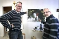

Bryngel Domeij
Konstnär, lärare, EP.
| Född: | 1956 Lycksele, Lycksele kn. [1] |
|---|
| Levde: | 1970 Ruskträsk 2:16, Ruskträsk, Lycksele fs, Lycksele kn. [1] |
|---|
| Levde: | 1980 Ruskträsk 2:16, Ruskträsk, Lycksele fs, Lycksele kn. [2] |
|---|
| Vigsel: | 1984-06-17 Öjeby kyrka, Piteå lfs, Piteå kn. |
|---|
Noteringar
Bryngel Domeij
Ateljen på Uddmansgatan i Piteå är hemvist för mitt skapande och då mest med måleri men även skulptur och objekt har en plats i arbetet med konsten. Arbetar till vardags som lärare i bild och form på Strömbackaskolan Piteå. Ställer oftast ut lokalt i Piteå men även i Umeå, Skellefteå och Luleå.
Bilderna präglas av ett möte mellan naturen och människan. Naturens och landskaets mjukare former i kontrast mot människans kantiga tankestrukturer och efterlämnade rester. Människan har alltid levt i samklang med naturen men också parasiterat på den. En gemenskap som ofta pendlat mellan enhet och förödelse. Även lanskapet och människans kantighet som en spegel av människans inre liv finns med som en dimension.
Vad vill jag med min konst?
Jag vet inte varför konst är viktigt, men redan som ung intresserade jag mig för konst och försökte härma olika konstnärliga uttryck. Jag tror att det är mötet mellan människans inre värld och tankar som bryts mot den yttre verkligheten som fachinerar mig. Konstnärens frihet att se och reflektera på sitt eget sätt över sitt liv och sin omvärld. I mitt eget måleri har det därför alltid funnits en brytning mellan människan och omvärlden. På senare tid har jag skapat en serie bilder med ytor och sönderbrutna former. Former som är i brytning mellan människans rätlinjiga ordning och eroderade reliker från slit och slängsamhället. Bilderna balanserar mellan kaos och ordning. Av någon anledning har rött fått ge färg åt dessa brutna former och trasiga ytor, kanske en signal för fara och varning, inte vet jag men det känns i alla fall rätt. Jag har sökt motiv bland skrot och sopor och från bildfragment ur tidningar som ligger nära mina tänkta motiv. Det är intressant att se hur formerna genomgår en metamorfos under arbetet och i slutändan har de blivit helt egna former utan verklighetskoppling. Även brottytor av landskapet och horisonten är en del i mitt skapande mera som en rest av ett landskap, varför det är så vet jag inte.
Utbildning
Konstlinjen Solviks Fhs 76-78
Teckningslärarutbildningen Umeå universitet 81-85
Emaljkurs Sunderbyns FHS
Datorgrafikkurs Ljud o bildskolan Varberg
Jurybedömda utställningar
14 jurybedömda utställningar Piteå kommuns konsthall 91-2005
Samlingsutställningar
Troliga tolkningar Piteå Konsthall 91
Solos Happening Piteå konsthall 1998
Separatutställningar
Ett flertal separatutställningar Piteå Luleå skellefteå, Umeå, Helsingborg.
Representerad
Piteå Kommun, Norrbottens läns landsting, Länsförsäkringars norrbottenssamling.
Offentliga Utsmyckningar
Vallsbergets skidanläggning, Piteå.
Övrigt
Vid sidan av måleriet tar jag gärna på mig att föreläsa kring konst och konsthistoria som ett inslag i min verkssamhet som konstutövare.
Personhistoria
| Årtal | Ålder | Händelse |
|---|
| 1956 |
|
Födelse 1956 Lycksele, Lycksele kn [1] |
| 1970 |
|
Levde 1970 Ruskträsk 2:16, Ruskträsk, Lycksele fs, Lycksele kn [1] |
| 1980 |
|
Levde 1980 Ruskträsk 2:16, Ruskträsk, Lycksele fs, Lycksele kn [2] |
| 1984 |
|
Vigsel Karin Gartfeldt 1984-06-17 Öjeby kyrka, Piteå lfs, Piteå kn |
| 2002 |
|
Fadern Thorvald Paulin Domeij dör 2002-02-01 Ruskträsk 31, Lycksele, Lycksele fs, Lycksele kn [3] |
| 2012 |
|
Modern Kristina Elisabet Forsgren dör 2012-03-29 Ruskträsk 31, Lycksele, Lycksele fs, Lycksele kn [4] |
Dokument
Källor
| [1] | Mtl Västerbottens län 1971 |
| |
| | |
| [2] | Mtl Västerbottens län 1981 |
| |
| | |
| [3] | man91, RFV 06, SDB7_04594572 |
| |
| | |
| [4] | FK 13, man91, SDB7_04893558 |
| |
|
|  |
2011-10-07. Samarbete mellan konstnärerna Stefan Holmgren t.v. och Bryngel Domeij.
Piteå-Tidningen
Bild: Maria Johansson
|
|
{kind=link}